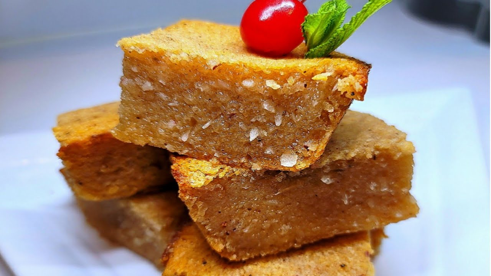

Cassava Pone Recipe

Description
Cassava pone is a dense, moist Trinidadian dessert made from grated cassava, coconut, spices, and sweeteners, baked until golden and chewy. It’s rich, flavorful, and a beloved treat across the Caribbean.
Ingredients
- 2 cups grated cassava
- 1 cup grated coconut
- 1 ½ cups brown sugar
- ½ cup melted butter
- 1 cup evaporated milk (or coconut milk)
- 1 teaspoon cinnamon
- ½ teaspoon nutmeg
- 1 teaspoon grated ginger (or ½ teaspoon ground ginger)
- 1 teaspoon vanilla extract
- 1 teaspoon baking powder
- ¼ teaspoon salt
- ½ cup raisins (optional)
Steps
- Preheat your oven to 350°F (175°C). Grease a baking dish (about 9x9 inches) and set aside.
- In a large bowl, combine the grated cassava, grated coconut, and brown sugar. Mix well.
- Add the melted butter, evaporated milk (or coconut milk), cinnamon, nutmeg, ginger, vanilla extract, baking powder, and salt. Stir everything together until fully combined. (You can add raisins at this stage if you like.)
- Pour the mixture into the prepared baking dish and spread it out evenly.
- Bake for about 60 to 75 minutes, or until the top is golden brown and a knife inserted into the center comes out mostly clean.
- Cool completely before slicing into squares or rectangles.
Enjoy!
Home